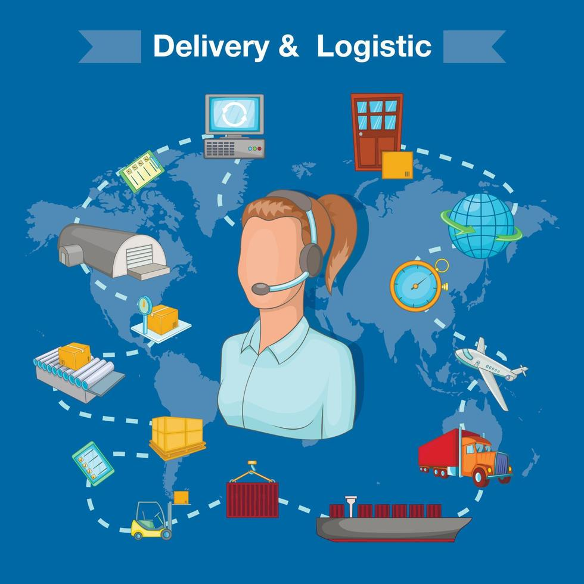
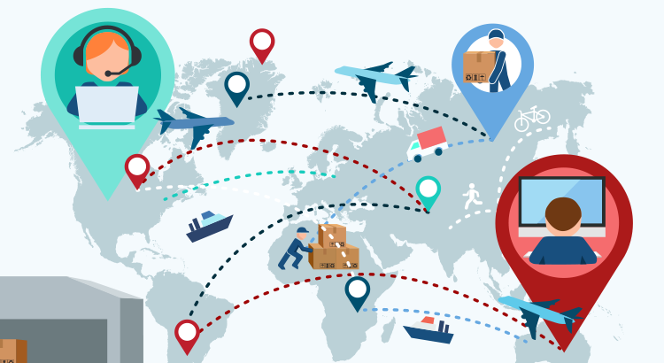

O que é Logística?
A Logística é a área da administração responsável por planejar, operar e controlar o fluxo de mercadorias, serviços e informações relacionadas, desde a sua origem até o consumo final. O objetivo fundamental é atender às exigências dos clientes de forma eficiente, no prazo correto e reduzindo custos operacionais.
No cenário econômico moderno, a logística não envolve apenas o transporte físico de produtos. Ela engloba a gestão estratégica de estoques, o processamento de pedidos, a armazenagem, a embalagem de proteção e a distribuição eficiente ao consumidor final.

Principais Componentes da Logística Integrada
Para garantir o sucesso de uma operação de distribuição, a logística divide suas etapas operacionais em pilares essenciais:
- Armazenagem e Gestão de Estoques: Armazenar matérias-primas e produtos acabados de forma organizada para responder prontamente à demanda.
- Transporte e Distribuição: Selecionar o meio de transporte mais adequado (rodoviário, ferroviário, aquaviário, aéreo ou dutoviário) de acordo com o tempo e custo.
- Processamento de Pedidos: Garantir a precisão desde o momento da compra até a separação (picking) e expedição do item.
- Embalagem e Movimentação: Proteger os produtos durante o deslocamento e facilitar seu manuseio seguro.

A Importância da Logística Reversa
Com o aumento das preocupações ambientais e do e-commerce, a Logística Reversa ganhou destaque expressivo. Ela trata do caminho inverso que o produto faz do consumidor de volta ao fabricante, seja para reciclagem, descarte ecologicamente correto ou substituição em caso de devolução ou avaria.
Além de cumprir normas regulatórias de proteção ao meio ambiente, a implementação eficiente de processos reversos agrega valor à marca e reduz perdas com matéria-prima residual.